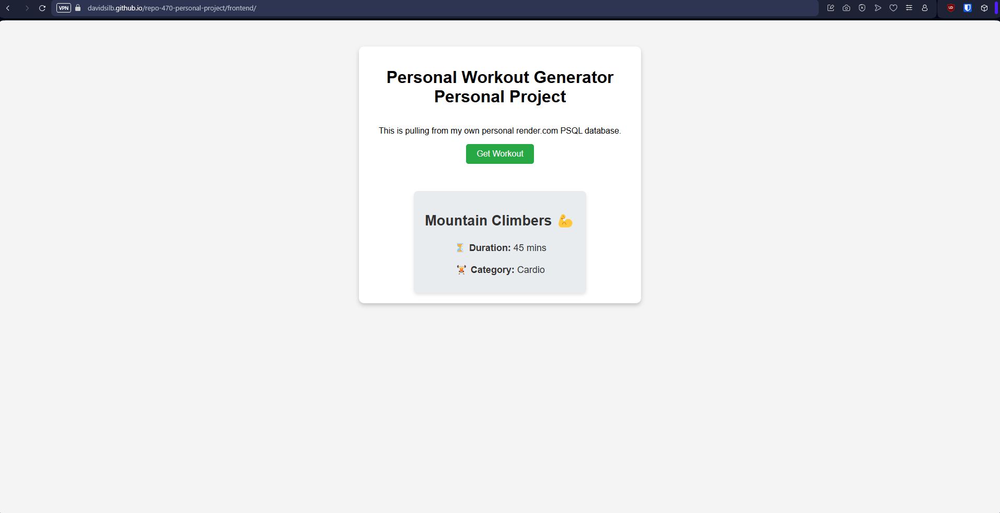
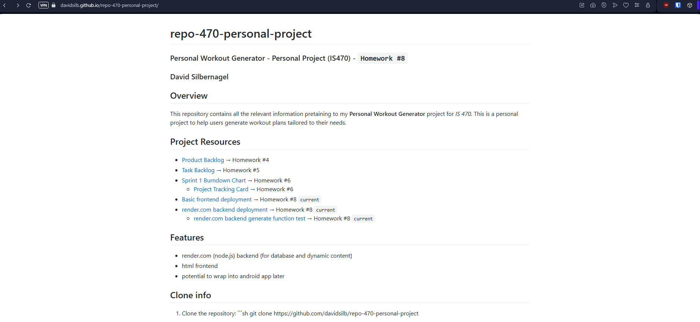
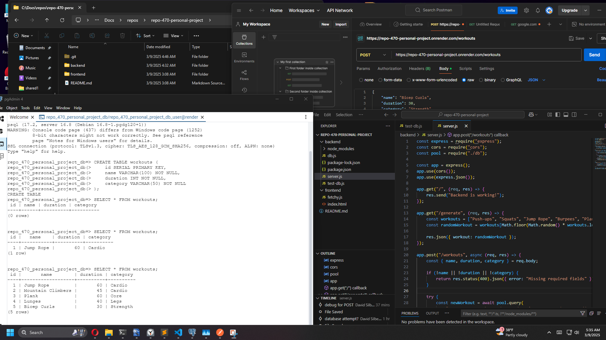
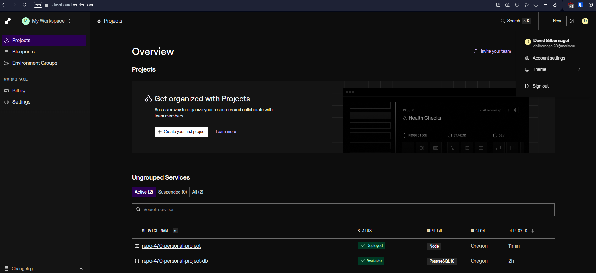

Project Frontend (loads from node.js and PostgreSQL hosted from render.com)
main page
working
render dashboard
https://docs.google.com/spreadsheets/d/1oWukNMGmNIJFDT58cUHw_NpxLfWbQL6VuF5YzZt2ljg/
Over the past two weeks, I work on this sparingly. I choose to use a web application as my initial testing ground as I am most comfortable with it. I have never used PostgreSQL databases or render.com, but needed a way to interact with static GitHub pages in a dynamic way. My project ultimately involved the creation of a web frontend and backend. I was able to learn a bit about Node.js, Express, PostgreSQL, and API integration.
• Database Integration
Initially, I had some difficulties connecting to Render’s PostgreSQL database. But after some trial and error (wating for autobuilds to actually build); I got the API calls to fetch and store information from my database.
• Frontend-Backend Com
API endpoints (/generate, /workouts) correctly return JSON responses.
• Improved UI/UX
I created a basic workout display that I would expand if I had more time. Styling css can be a pain.
• Problems
Encountering errors (400 Bad Request, Cloudflare issues, and database connectivity) forced me to try new troubleshooting steps; online tools like Render have logs, a big bonus!!!
•Add More Workout Categories
•Add Users to Database
•Add Filters
•Look to add Mobile
• Schedule time: Plan out your weeks. I didn’t plan enough and ended up being swamped with this project. I had to change some of what I wanted to do and get done.
• Working with others: When working with others, I won’t have the luxury of simply changing things, as they will be relying on me to finish my assigned work wto meet our group goals. When working alone, it is easier to pivot and adjust.